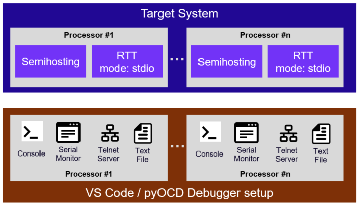
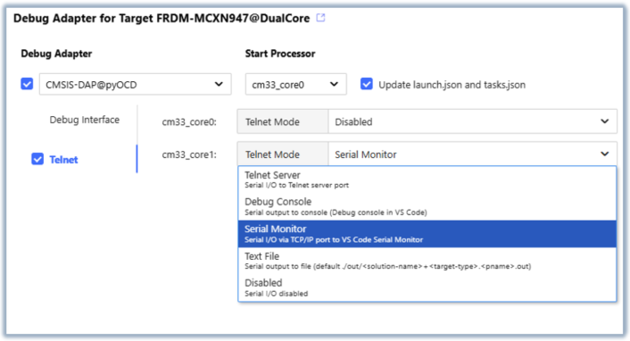
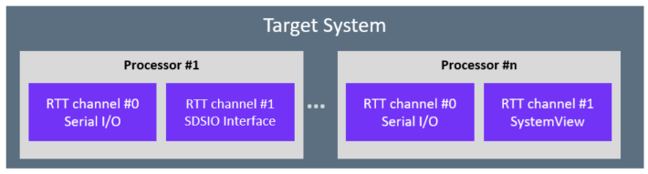

pyOCD Debugger
The pyOCD Debugger connects to CMSIS-DAP (for example ULINKplus) or ST-Link debug adapters. The CMSIS-Toolbox defines the debug configuration as part of the csolution project, ensuring consistent debug sessions across development teams, CI/CD environments, and different host platforms. This chapter describes how to use the pyOCD Debugger with the CMSIS-Toolbox.
- Extended Options explains additional configuration features that are required in specific use-cases.
- Minimal Setup explains how to create a
*.cbuild-run.ymlfile for a minimal pyOCD setup. - Command Line Invocation describes how to call pyOCD directly from the command-line.
cbuild-run:explains the configuration file that describes the overall pyOCD system setup.
Other manual sections describe how to configure debuggers:
- Run and Debug Configuration explains overall structure and how projects and images are configured.
- Debugger Configuration - pyOCD contains details about the options that are specific to pyOCD.
Extended Options
The section CSolution Project Format - pyOCD contains the pyOCD configuration for typical systems.
Extended YAML options are required to configure specific use-cases or overwrite information that is typically provided in the DFP.
CMSIS-DAP based Debug Adapters implement debug access sequences that are configured in the DFP for a device.
gdbserver:
gdbserver: |
Content | |
|---|---|---|
- port: |
Required | Set TCP/IP port number of GDB Server (default: 3333, 3334, ... incremented for each processor). |
pname: |
Optional | Identifies the processor (not required for single core system). |
Note
- When no
gdbservernode is applied, the default mechanism of incrementing port number starting with3333is used.
telnet:
pyOCD integrates a Telnet service for character I/O functions via Semihosting or SEGGER RTT. Each processor that runs an independent application can be controlled individually.

The telnet: node configures:
- Telnet port for connecting remote tools, for example the Serial Monitor VS Code extension.
- Redirect the output to a
file,console,server, ormonitor. The settingmonitorconnects a telnetportto the Serial Monitor in VS Code. The default output file and location is derived from thecbuild-run.ymlfile and uses the extension<pname>.txt, format:<solution-name>+<target-type>.<pname>.out
telnet: |
Description | |
|---|---|---|
- mode: |
Required | Redirect output: off (default), server, file, console, monitor. |
pname: |
Optional | Identifies the processor (not required for single core system). |
port: |
Optional | Set TCP/IP port number of Telnet Server (default: 4444, 4445, ... incremented for each processor). |
file-in: |
Optional | Explicit path and name of the telnet input file. Default: ./out/\<solution-name\>+\<target-type\>.\<pname\>.in |
file-out: |
Optional | Explicit path and name of the telnet output file. Default: ./out/\<solution-name\>+\<target-type\>.\<pname\>.out |
| Telnet Mode | Description |
|---|---|
server |
Serial I/O to Telnet server port. |
file |
Serial I/O to text files. Default: ./out/\<solution-name\>+\<target-type\>.\<pname\>.{in \| out} |
console |
Serial output to console (Debug console in VS Code). |
monitor |
Serial I/O via TCP/IP port to VS Code Serial Monitor. |
off |
Serial I/O disabled. |
Note
- When no
telnetnode is applied, Serial I/O to all processors is disabled.
The Arm CMSIS Solution extension for VS Code simplifies the configuration and the examples below show the setup in a *.csolution.yml file.

Examples:
Enable Telnet service for a single core system.
debugger:
name: CMSIS-DAP@pyOCD
protocol: swd
telnet:
- mode: monitor # Output via TCP/IP port to VS Code Serial Monitor
Enable Telnet service for a single core system.
debugger:
name: CMSIS-DAP@pyOCD
protocol: swd
telnet:
- mode: server
Enable Telnet service for a multi core system.
debugger:
name: CMSIS-DAP@pyOCD
protocol: swd
telnet:
- pname: Core0 # enable Telnet service with default settings
mode: server
port: 4444
- pname: Core1
mode: console # route Telnet input/output to console
- pname: Core2
mode: file # route Telnet input/output to files
file-in: Blinky+MyTarget.Core2.in
file-out: Blinky+MyTarget.Core2.out
connect:
Configures the behavior for connecting pyOCD to the hardware target.
| Description | ||
|---|---|---|
connect: |
Optional | Selects the connect mode: pre-reset, under-reset, attach (default), halt. |
| Connect Mode | Description |
|---|---|
pre-reset |
Apply a hardware reset before connect. Sequence: ResetHardware. |
under-reset |
Asserts a hardware reset (Sequence: ResetHardwareAssert) during connect and deasserts (Sequence: ResetHardwareDeassert) after core(s) are halted. |
attach |
Do not change status of the core(s). |
halt |
Halt core(s) after connect. |
reset:
Configures the reset behavior for each core when a reset is requested.
reset: |
Description | |
|---|---|---|
- pname: |
Optional | Identifies the processor (not required for single core system). |
type: |
Required | Selects the reset type: hardware, system, core. Default: specified in DFP. |
| Reset Types | Description |
|---|---|
hardware |
Use a system-wide reset via dedicated debugger reset line. Sequence: ResetHardware. |
system |
Use a system-wide reset via software mechanism. Sequence: ResetSystem. |
core |
Use a processor reset via software mechanism. Sequence: ResetProcessor. |
Note
The defaultResetSequence in DFP element /package/devices/family/.../debug can define a different default reset type. If no defaultResetSequence, the default reset type is system.
load-setup:
Configures the debug sequences executed during the load command of pyOCD.
load-setup: |
Description | |
|---|---|---|
halt: |
Optional | Halt core(s) before load: on (default), off. |
pre-reset: |
Optional | Reset type before loading: off, hardware, system, core. Default: specified in DFP or defined with reset. |
post-reset: |
Optional | Reset type after loading: off, hardware (default), system, core. |
Examples:
debugger:
name: CMSIS-DAP@pyOCD # default connect, halt and reset behavior
debugger:
name: CMSIS-DAP@pyOCD
connect: under-reset # connect under hardware reset
reset:
- type: system # use system reset
load-setup:
halt: on # halt core(s) before load
post-reset: hardware # use hardware reset after load
debugger:
name: CMSIS-DAP@pyOCD
connect: pre-reset # apply hardware reset before connect
reset:
- pname: Core0 # for Core0
type: hardware # use hardware reset
- pname: Core1 # for Core1
type: system # use system reset
load-setup:
pre-reset: system # use system reset before load
post-reset: off # no reset after load
rtt:
RTT is a software component that implements real-time transfer channels from the target system to the pyOCD Debugger for multiple processors.

The rtt: node configures the RTT features and the RTT channel usage. At least one RTT channel must be configured for each processor to enable the RTT capturing in pyOCD.
Note
RTT is currently only enabled when using the pyOCD run command. It will be added in future pyOCD versions to the gdbserver.
rtt: |
Description | |
|---|---|---|
- pname: |
Optional | Processor identifier (not required for single-core systems). |
control-block: |
Optional | RTT control block configuration. |
channel: |
Required | Channel configuration. |
control-block:
The control-block: node configures the RTT control block discovery in pyOCD.
control-block: |
Description | |
|---|---|---|
auto-detect: |
Optional | Scan default memory regions for the RTT control block signature: true, false (default). |
address: |
Optional | Explicit control block address; when combined with size, acts as scan start address. |
size: |
Optional | Scan length in bytes when address is provided. |
pyOCD discovers the RTT control block using the prioritized steps for each core on the target:
control-block:provides an explicitaddress::
a.size:is provided: pyOCD scans that memory range.
b.size:is not provided: pyOCD checks the provided explicit address.- When
auto-detect: truepyOCD scans default memory region (RAM) for the RTT control block signature. If multiple regions are marked as default, the region with the lowest start address is selected. - When
control-block:is empty or not specified, pyOCD checks the ELF file for the symbol_SEGGER_RTTthat specifies the control block location.
If the RTT control block cannot be found, RTT will be disabled for that core.
channel:
The channel: node selects the RTT channel mode.
channel: |
Description | |
|---|---|---|
- number: |
Required | Channel number. |
mode: |
Required | Channel mode selection: stdio, server, systemview, systemview-server. |
port: |
Optional | TCP port number (required for server and systemview-server). |
| Channel Mode | Description |
|---|---|
stdio |
Connects channel to standard input/output service that is configured via the telnet: node. |
server |
Exposes channel over a TCP server port. |
systemview |
Saves channel data to *.SVDat file for SEGGER SystemView tool. Default file: ./out/<solution-name>+<target-type>.SVDat; see systemview: node. |
systemview-server |
Streams live data to SEGGER SystemView tool over a "IP Recorder host" TCP port. Refer to the SEGGER SystemView user guide, IP Recorder. |
Examples:
Enable RTT with STDIO on channel 0 and configure explicit control block:
debugger:
name: CMSIS-DAP@pyOCD
protocol: swd
rtt:
- pname: Core0
control-block:
address: 0x20000000
size: 0x00020000
channel:
- number: 0
mode: stdio
Enable RTT with STDIO and map RTT channel 2 to a Telnet Server port 4444 and channel 3 to a Telnet Server port 4445:
debugger:
name: CMSIS-DAP@pyOCD
protocol: swd
rtt:
- pname: Core0
channel:
- number: 0
mode: stdio
- number: 2
mode: server
port: 4444
- number: 3
mode: server
port: 4445
systemview:
The systemview: node configures the *.SVDat file capturing for SEGGER SystemView tool for analyzing the runtime behavior of embedded systems.
systemview: |
Description | |
|---|---|---|
file: |
Optional | SystemView capture file. Default: ./out/<solution-name>+<target-type>.SVDat (derived from *.cbuild-run.yml). |
auto-start: |
Optional | Send SystemView start command automatically: true (default), false. |
auto-stop: |
Optional | Send SystemView stop command automatically: true (default), false. |
Examples:
Configure SystemView capture on channel 1:
debugger:
name: CMSIS-DAP@pyOCD
protocol: swd
rtt:
- pname: Core0
channel:
- number: 1
mode: systemview
systemview: # explicit SystemView output file
file: ./out/MyFile.SVDat
trace:
Note
The trace: feature is under development. This section provides a preview.
CMSIS-DAP supports the SWO trace output of Cortex-M devices. The device-specific trace features are configured using the *.dbgconf file.
The default trace output file and location is derived from the cbuild-run.yml file
and uses the extension <pname>.txt, format: <solution-name>+<target-type>.trace
trace: |
Description | |
|---|---|---|
mode: |
Required | Trace: off (default), server, file. |
clock: |
Required | Trace clock frequency in Hz. |
port-type: |
Optional | Set Trace Port transport mode. Currently only SWO-UART is accepted. |
baudrate: |
Optional | Maximum baudrate for SWO-UART mode. |
port: |
Optional | Set TCP/IP port number of Trace server (default: 5555). |
file: |
Optional | Explicit path and name of the trace output file. Default: <solution-name>+<target-type>.trace. |
Minimal Setup
pyOCD uses the information from the CMSIS system as explained under Build Information Files - Run and Debug Management. The following section shows a minimal setup for configuring pyOCD using a *.cbuild-run.yml file.
Example: MySetup.csolution.yml
solution:
packs:
- pack: Infineon::PSE8xxx_DFP@1.0.1 # Device Family Pack (DFP)
target-types:
- type: PSE8_Target # Target name
device: PSE812GOS2DFNC4B # Device name from DFP
target-set:
- set:
images:
- image: out/MyFile.hex # Image files used
debugger:
name: CMSIS-DAP@pyOCD # Debugger configuration
clock: 10000000
protocol: swd
To generate the related *.cbuild-run.yml file for pyOCD run the following CMSIS-Toolbox commands:
cpackget add Infineon::PSE8xxx_DFP@1.0.1
cbuild setup MySetup.csolution.yml --active PSE8_Target
This creates the file out/MySetup+PSE8_Target.cbuild-run.yml that can be used for the command line invocation.
Command Line Invocation
The CMSIS-Toolbox debugger setup is provided in the file *.cbuild-run.yml. The *.cbuild-run.yml file is generated by the CMSIS-Toolbox build process and uses the Debugger Configuration that is part of the csolution project. Minimal Setup shows how to create a setup for a stand-alone image file.
Use the following command line syntax to leverage this information:
>pyocd <command> [--probe <probe>] [--uid <uid>] [options] --cbuild-run <cbuild-run.yml file>
<command> |
Description |
|---|---|
gdbserver |
Start GDB server(s). |
run |
Execute application. |
erase |
Erase device. |
load |
Load image to device. |
reset |
Reset device. |
[options] |
Description |
|---|---|
--probe |
Specify the probe type (cmsisdap: or jlink:). |
--uid |
Specify the ID or serial number of a debug probe. |
Info
When only one probe is connected to the host computer, --probe and --uid can be omitted.
Example:
Connect to a specific probe on the host computer.
pyocd load --probe cmsisdap: --uid XP0GA4C42ZQAA --cbuild-run c:\Test\Dec11\DualCore\out\DualCore+FRDM-MCXN947.cbuild-run.yml
gdbserver
Start GDB servers for each target device core, used for debugging the applications.
<options> |
Description |
|---|---|
--semihosting |
Enable semihosting (default: disabled). |
--persist |
Keep GDB server running even after remote has detached (default: disabled). |
--reset-run |
Reset and run before running GDB server. |
Example:
pyocd gdbserver --persist --reset-run --semihosting --cbuild-run out/DualCore+Alif-AppKit-E7.cbuild-run.yml
run
Run the target until timelimit is reached or an EOT (0x04) character is detected on stdout.
<options> |
Description |
|---|---|
--timelimit <sec> |
Maximum execution time in seconds before terminating (default: no time limit). |
--eot |
Terminate execution when EOT character (0x04) is detected on stdout (default: disabled). |
Example:
pyocd run --cbuild-run out/DualCore+Alif-AppKit-E7.cbuild-run.yml --eot --timelimit 30
erase
Erase target using chip erase.
<options> |
Description |
|---|---|
--chip |
Perform a chip erase. |
Note
Currently erase without --chip option is not supported.
Example:
pyocd erase --chip --cbuild-run out/DualCore+Alif-AppKit-E7.cbuild-run.yml
load
Program target with images listed under the output: node.
Example:
pyocd load --cbuild-run out/DualCore+Alif-AppKit-E7.cbuild-run.yml
reset
Reset target using selected reset: type.
Example:
pyocd reset --cbuild-run out/DualCore+Alif-AppKit-E7.cbuild-run.yml
Content of *.cbuild-run.yml
This section details the content of *.cbuild-run.yml file and how it is used to configure pyOCD. The *.cbuild-run.yml
file is generated by the CMSIS-Toolbox from the information provided in the csolution project.
However, it is possible to create a *.cbuild-run.yml file manually and the following section explains
the file structure.
cbuild-run:
The top-level cbuild-run: node identifies the file as a *.cbuild-run.yml file. All Run and Debug configuration nodes
are nested under this node. The table below is an excerpt of the full File Structure of *.cbuild-run.yml
configuration and highlights the nodes relevant to pyOCD. The contents of each node are described in the following sections.
cbuild-run: |
Content | |
|---|---|---|
device: |
Required | Identifies the device. |
device-pack: |
Optional | Identifies the device pack used. |
board-pack: |
Optional | Identifies the board pack used. |
output: |
Optional | Lists the images (ELF, HEX, BIN) in this solution. |
system-resources: |
Optional | Lists target system resources. |
system-descriptions: |
Optional | Lists target's description files for peripherals and software components. |
debugger: |
Optional | Configures the debugger. |
debug-vars: |
Optional | Debug variables. |
debug-sequences: |
Optional | Debug sequences. |
programming: |
Optional | Lists flash algorithms for programming. |
flash-info: |
Optional | Lists flash information for flash programming using debug sequences. |
debug-topology: |
Optional | Debug topology. |
device:
pyOCD uses the device node to name the target in the current debug session. The node value is structured as
[<vendor>::]<device>[:<pname>], where only the <device> part is used to name the target. The default value
is an empty string.
Example:
device: Alif Semiconductor::AE722F80F55D5LS
device-pack:
The device-pack (DFP) improves pyOCD's error reporting when a required file is provided by the device pack.
Example:
device-pack: AlifSemiconductor::Ensemble@2.0.4
board-pack:
The board-pack (BSP) improves pyOCD's error reporting when a required file is provided by the board pack.
Example:
board-pack: AlifSemiconductor::Ensemble@2.0.4
output:
pyOCD uses the information from the output: node to determine which images need to be loaded into the device's
flash memory and at what addresses. The image file type is determined by the type: node, and the load offset
for binary image files is provided by the load-offset: node. Only files with image in the load: node are
programmed to the device.
output: |
Content | |
|---|---|---|
- file: |
Required | Specifies the file name. |
type: |
Required | Specifies the file type. |
info: |
Optional | Brief description of the file. |
load: |
Required | Load mode of the image file for programmers and debug tools. |
load-offset: |
Optional | Offset applied in *.csolution.yml when loading the binary image file. |
pname: |
Optional | Image belongs to processor in a multi-core system. |
Example:
output:
- file: M55_HP/Alif-AppKit-E7/Debug/M55_HP.axf
info: generated by M55_HP.Debug+Alif-AppKit-E7
type: elf
load: image+symbols
pname: M55_HP
- file: M55_HE/Alif-AppKit-E7/Debug/M55_HE.axf
info: generated by M55_HE.Debug+Alif-AppKit-E7
type: elf
load: symbols
pname: M55_HE
- file: M55_HE/Alif-AppKit-E7/Debug/M55_HE.hex
info: generated by M55_HE.Debug+Alif-AppKit-E7
type: hex
load: image
pname: M55_HE
- file: M55_HE/Alif-AppKit-E7/Debug/M55_HE.bin
info: generated by M55_HE.Debug+Alif-AppKit-E7
type: bin
load: none
pname: M55_HE
system-resources:
Contains a list of memory regions that pyOCD uses to build the device memory map. A default Cortex-M memory map is used
as the baseline and is then updated with the information provided in the memory: node. If no memory regions are specified,
pyOCD falls back to the default Cortex-M memory map.
system-resources: |
Content | |
|---|---|---|
memory: |
Optional | Identifies the section for memory. |
memory: |
Content | |
|---|---|---|
- name: |
Required | Name of the memory region (when PDSC contains id, it uses the id as name). |
access: |
Required | Access attribute string for the memory (see access: table here). |
start: |
Required | Base address of the memory. |
size: |
Required | Size of the memory. |
pname: |
Optional | Only accessible by a specific processor. |
alias: |
Optional | Name of identical memory exposed at a different address. |
Default Cortex-M memory map:
system-resources:
memory:
- name: Code
access: rx
start: 0x00000000
size: 0x20000000
- name: SRAM
access: rwx
start: 0x20000000
size: 0x20000000
- name: Peripherals
access: rwp
start: 0x40000000
size: 0x20000000
- name: RAM1
access: rwx
start: 0x60000000
size: 0x20000000
- name: RAM2
access: rwx
start: 0x80000000
size: 0x20000000
- name: Devices-Shareable
access: rwp
start: 0xA0000000
size: 0x20000000
- name: Devices-NonShareable
access: rwp
start: 0xC0000000
size: 0x20000000
- name: System-Peripherals
access: rwp
start: 0xE0000000
size: 0x20000000
Example:
system-resources:
memory:
- name: ITCM_HE
access: rwx
start: 0x00000000
size: 0x00040000
pname: M55_HE
alias: SRAM4
- name: ITCM_HP
access: rwx
start: 0x00000000
size: 0x00040000
pname: M55_HP
alias: SRAM2
- name: MRAM
access: rx
start: 0x80000000
size: 0x00580000
- name: SRAM2
access: rwx
start: 0x50000000
size: 0x00040000
- name: SRAM4
access: rwx
start: 0x58000000
size: 0x00040000
system-descriptions:
Contains a list of system description files for the target's peripherals and software components. The svd files are
processed by pyOCD to present debug views and decode register reads/writes.
system-descriptions: |
Content | |
|---|---|---|
- file: |
Required | Specifies the file name including the path. |
type: |
Required | Specifies the file type (see table below). |
info: |
Optional | Brief description of the file. |
pname: |
Optional | File is used only for a specific processor; default is for all processors. |
type: |
Description |
|---|---|
svd |
System View Description (*.svd) file specified in the DFP. |
Note
Currently pyOCD has a limitation of only processing the svd file for the processor listed in start-pname:.
Example:
system-descriptions:
- file: ${CMSIS_PACK_ROOT}/AlifSemiconductor/Ensemble/2.0.4/Debug/SVD/AE722F80F55D5LS_CM55_HE_View.svd
type: svd
pname: M55_HE
- file: ${CMSIS_PACK_ROOT}/AlifSemiconductor/Ensemble/2.0.4/Debug/SVD/AE722F80F55D5LS_CM55_HP_View.svd
type: svd
pname: M55_HP
debugger:
Contains the user's debugger configuration settings. The available options are described in detail in the CSolution Project Format section Debugger Configuration - pyOCD and pyOCD Debugger Extended Options.
Example:
debugger:
name: CMSIS-DAP@pyOCD
protocol: swd
clock: 10000000
start-pname: M55_HP
connect: attach
reset:
- type: system
pname: M55_HP
- type: core
pname: M55_HE
gdbserver:
- port: 3333
pname: M55_HP
- port: 3334
pname: M55_HE
telnet:
- mode: console
pname: M55_HE
port: 4445
- mode: monitor
pname: M55_HP
port: 4444
debug-vars:
Contains default values for debug sequence variables. These values can be overridden by explicit settings in a
*.dbgconf file provided in the debugger: node.
debug-vars: |
Content | |
|---|---|---|
vars: |
Optional | Initial values for variables used in debug-sequences:. |
Example:
debug-vars:
vars: |
// Default values for variables in debug sequences. Can be configured with a *.dbgconf file in the user project
__var SWO_Pin = 0; // Serial Wire Output pin: 0 = PIO0_10, 1 = PIO0_8
__var Dbg_CR = 0x00000000; // DBG_CR
__var BootTime = 10000; // 10 milliseconds
debug-sequences:
Contains debug sequences
from the DFP for the target. A sequence with no blocks: disables the default sequence; sequence names can override
default sequences from the DFP.
debug-sequences: |
Content | |
|---|---|---|
- name: |
Required | Name of the sequence. |
info: |
Optional | Descriptive text to display for example for error diagnostics. |
blocks: |
Optional | A list of command blocks in order of execution. |
pname: |
Optional | Executes sequence only for a specific processor; default is for all processors. |
blocks: |
Content | |
|---|---|---|
- info: |
Optional | Descriptive text to display for example for error diagnostics. |
blocks: |
Optional | A list of command blocks in the order of execution. |
execute: |
Optional | Commands for execution. |
atomic: |
Optional | Atomic execution of commands; cannot be used with blocks:. |
if: |
Optional | Only executed when expression is true. |
while: |
Optional | Executed in loop until while expression is true. |
timeout: |
Optional | Timeout value (integer) in milliseconds for while loop. |
Example:
debug-sequences:
- name: DisableWarmResetHandshake
blocks:
- execute: |
Write32(0x1A601024, 0);
pname: M55_HE
- name: DisableWarmResetHandshake
blocks:
- execute: |
Write32(0x1A600024, 0);
pname: M55_HP
- name: DebugDeviceUnlock
blocks:
- execute: |
DAP_Delay(500000); // Delay for 500ms
- name: ResetSystem
blocks:
- execute: |
Sequence("DisableWarmResetHandshake");
- execute: |
// System Control Space (SCS) offset as defined in Armv6-M/Armv7-M.
__var SCS_Addr = 0xE000E000;
__var AIRCR_Addr = SCS_Addr + 0xD0C;
__var DHCSR_Addr = SCS_Addr + 0xDF0;
// Execute SYSRESETREQ via AIRCR
Write32(AIRCR_Addr, 0x05FA0004);
- while: (Read32(DHCSR_Addr) & 0x02000000)
timeout: 500000
programming:
Contains a list of the target's flash programming algorithms. pyOCD uses these algorithms to identify which memory regions should be treated as flash, and it will automatically select the appropriate algorithm when programming flash on the target.
programming: |
Content | |
|---|---|---|
- algorithm: |
Required | Programming algorithm file including the path. |
start: |
Required | Start address of memory covered by the programming algorithm. |
size: |
Required | Size of memory covered by the programming algorithm. |
ram-start: |
Required | Start address of RAM where the algorithm will be executed from. |
ram-size: |
Required | Maximum size of RAM available for executing the programming algorithm. |
pname: |
Optional | Specifies the processor for the execution of the algorithm. |
Example:
programming:
- algorithm: ${CMSIS_PACK_ROOT}/AlifSemiconductor/Ensemble/2.0.4/Flash/algorithms/Ensemble.FLM
start: 0x80000000
size: 0x00580000
ram-start: 0x00000000
ram-size: 0x00020000
- algorithm: ${CMSIS_PACK_ROOT}/AlifSemiconductor/Ensemble/2.0.4/Flash/algorithms/Ensemble_IS25WX256.FLM
start: 0xC0000000
size: 0x02000000
ram-start: 0x00000000
ram-size: 0x00040000
flash-info:
Contains a list of target's flash memories information, which is used by pyOCD to determine which memory regions should be treated as flash and how to program them using flash debug sequences.
flash-info: |
Content | |
|---|---|---|
- name: |
Required | Name of the specified flash device. |
start: |
Required | Base address of the memory. |
page-size: |
Required | Page size. A page is the smallest unit that can be programmed. |
blocks: |
Required | List of blocks. A block is the smallest unit that can be erased. |
blank-val: |
Optional | 64-bit value in erased memory (default 0xFFFFFFFFFFFFFFFF). Value is truncated to match the access size. |
fill-val: |
Optional | 64-bit value that a debugger uses to fill the remainder of a page (default 0xFFFFFFFFFFFFFFFF). Value is truncated to match the access size. |
ptime: |
Optional | Timeout in milliseconds for programming a page (default 300). |
etime: |
Optional | Timeout in milliseconds for erasing a block (default 300). |
pname: |
Optional | Executes programming only for a specific processor (default for all processors). |
blocks: |
Content | |
|---|---|---|
- count: |
Required | Number of blocks. |
size: |
Required | Block size in bytes. Total memory size (in bytes) is size * count. |
arg: |
Optional | Optional value that a debugger writes to the pre-defined debug access variable __FlashArg at start of a flash operation (default 0). |
Note
- The
gapelement is not used.
Example:
flash-info:
- name: Internal Flash (code) 64KB
start: 0x00000000
page-size: 0x00000040
blocks:
- count: 256
size: 0x00000100
arg: 0
blank-val: 0x00000000FFFFFFFF
ptime: 100000
etime: 1000000
debug-topology:
Describes the properties of the system hardware for debug functionality. The information for this node is taken from
the DFP. If the information is not provided in the *.cbuild-run.yml file, pyOCD will use the default values described below.
debug-topology: |
Content | |
|---|---|---|
debugports: |
Optional | Describes the CoreSight debug ports of the device and its capabilities. |
processors: |
Optional | Map of pname identifiers to access port IDs (mandatory for multi-processor devices). |
swj: |
Optional | Device allows switching between Serial Wire Debug (SWD) and JTAG protocols (true or false). |
dormant: |
Optional | Device requires the dormant state to switch debug protocols (true or false). |
debugports: |
Content | |
|---|---|---|
- dpid: |
Required | Unique ID of this debug port. |
accessports: |
Optional | List of CoreSight access ports (APv1/APv2) (mandatory for multi-processor devices). |
accessports: |
Content | |
|---|---|---|
- apid: |
Required | Unique ID of this access port. If only apid is provided, access port (APv1) with index 0 will be implicitly used. |
index: |
Optional | Index to select this access port (APv1) for a target access. |
address: |
Optional | Address to select this access port (APv2) in its parent's address space for a target access. |
Note
index: and address: cannot be specified at the same time.
processors: |
Content | |
|---|---|---|
- pname: |
Required | Processor identifier (mandatory for multi-processor devices). |
apid: |
Optional | Access port ID to use for this processor. |
reset-sequence: |
Optional | Name of debug sequence for reset operation (default: ResetSystem sequence). |
Default values:
debug-topology:
dormant: false
swj: true
debugports:
- dpid: 0
accessports:
- apid: 0
index: 0
Example:
debug-topology:
debugports:
- dpid: 0
accessports:
- apid: 0
address: 0x00200000
- apid: 1
address: 0x00300000
processors:
- pname: M55_HP
apid: 0
- pname: M55_HE
apid: 1
dormant: true
Debug Access Sequence Usage for pyOCD Commands
The sequence diagrams below show the usage of the debug access sequences for pyOCD commands. The specification Open-CMSIS-Pack - Usage of debug access sequences describes the following sequence blocks. pyOCD uses these concepts, but implements these deviations:
- Connect Debugger to Device:
- For the
connect:modeattach, no reset or halt operations are issued. - For multi-processor systems, only the following blocks are executed once per processor core: Read Target Features, DebugCoreStart, Stop Processor / ResetCatchSet, Wait for Processor to Stop, and Initialize Debug Components. The remaining diagram elements run once for the device as a whole. This distinction is important for multi-core targets, where some blocks run once per core and others run once for the device.
- For the
Info
Sequence Blocks in the diagrams below link to the Open-CMSIS-Pack specification that provides further details.